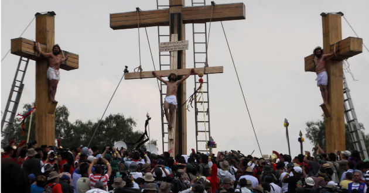

¿Que es la Semana Santa?
Última semana de la cuaresma, desde el Domingo de Ramos hasta el Domingo de Resurrección, que la iglesia católica dedica a recordar la pasión, muerte y resurrección de Jesús. Conmemoración anual cristiana de la Pasión, Muerte y Resurrección de Jesús de Nazaret. Por eso, es un período de intensa actividad litúrgica dentro de las diversas confesiones cristianas. Da comienzo el Domingo de Ramos y finaliza el Domingo de Resurrección,1 aunque su celebración suele iniciarse en varios lugares el viernes anterior (Viernes de Dolores) y se considera parte de la misma el Domingo de Resurrección. La fecha de la celebración es variable (entre marzo y abril según el año) ya que depende del calendario lunar. La Semana Santa va precedida por la Cuaresma, que finaliza en la Semana de Pasión donde se celebra la eucaristía en el Jueves Santo, se conmemora la Crucifixión de Jesús el Viernes Santo y la Resurrección en la Vigilia Pascual durante la noche del Sábado Santo al Domingo de Resurrección
Aplicacion Dos, CLD
La Semana Santa En Atlixco
El Vía Crucis de Atlixco, en el estado mexicano de Puebla, reúne desde hace más de un siglo en Semana Santa a un grupo de penitentes capaces de traspasar el umbral del dolor por su devoción, al salir en procesión encapuchados y descalzos, con grilletes y coronas de espinas.
Atlixco, un municipio situado a 30 minutos de Puebla capital y que fue nombrado recientemente Pueblo Mágico, acogió hoy la llamada procesión de los Engrillados, que se celebra cada Viernes Santo en medio de gran expectación. Es la fe, la devoción que tenemos para salir y para que este año nos vaya bien a nosotros y a la familia, una obra de agradecimiento", describe un engrillado a Efe los motivos que le llevan a salir cada año en la procesión.
Bajo el anonimato el devoto confiesa que lleva un lustro participando y que lo hace con orgullo por todos los favores que el Señor le ha dado.
Aplicacion Dos, CLD
Estados que celebran Semana Santa
Iztapalapa
¡SEMANA SANTA EN IZTAPALAPA LA MÁS GRANDE DEMOSTRACION DE AMOR Y FE!
Iztapalapa, pueblo prehispánico, milenario con arraigo en sus tradiciones y con un linaje que hace una comunidad con orgullo, desde nuestros ancestros hasta el presente, siempre un pueblo rico en cultura y en una tradición religiosa desde la ceremonia del fuego nuevo hasta el presente con la Representación de la Vida, Pasión, Muerte, Resurrección y Ascensión de Cristo.
Es la semana santa la que desde 1843 motiva el interés y la participación de sus habitantes siendo esta tradición una expresión de fe y que defiende su cultura, tradiciones y acervo religioso a través de los siglos.
Año con año niños, jóvenes, adultos y ancianos de los 8 barrios tradicionalistas: San Lucas, Santa Bárbara, San Ignacio, San pablo, San José, San Pedro, La Asunción y San Miguel salen a las calles motivados por la fe a compartir con el mundo la representación de Semana Santa en Iztapalapa transformando sus calles, jardines y templos en el escenario idóneo para representar el suceso que cambio la historia de la Humanidad conjugando así un abanico de motivaciones y sentimientos humanos llevando consigo el valor de una tradición.

San Luis Potosi
En todo San Luis Potosí se organizan un buen número de eventos culturales y religiosos para conmemorar la Semana Santa, desde turismo religioso y cultural, como el espectáculo de la Fiesta de la Luz, museos e iglesias, hasta turismo de aventura. Sin embargo, el evento más importante y de mayor tradición entre los lugareños tiene lugar el Viernes Santo, cuando se realiza la Procesión del Silencio, una de las más arraigadas debido a su solemnidad y misticismo. No importa que no seas católico, ven a vivir una experiencia digna de recordar en la que mientras más cosas sucedan, más querrás conocer el origen y significado de lo que estás presenciando.
Desde ya casi 60 años, alrededor de dos mil personas de 28 diferentes cofradías (asociaciones de fieles católicos) se reúnen el Viernes Santo para acompañar esta procesión durante la cual portan emblemas, imágenes religiosas referentes al Vía Crucis y visten los colores distintivos de su compañía. Cada una de las “Cofradías” lleva una imagen representativa del Vía Crucis (camino a la cruz) de Jesucristo y de los misterios del Santo Rosario.

Guerrero
El inicio de esta tradición, debida a la gran religiosidad profesada por los habitantes de este pueblo minero, data, según los cronistas, de 1598, aunque en los archivos de la parroquia de Santa Prisca y San Sebastián se encuentran los registros de los primeros permisos otorgados por la Iglesia para celebrar una procesión del Cristo del Santo Entierro, en 1600. Esta celebración, que continúa hasta la fecha, se lleva a cabo, según lo marque el calendario católico, en el mes de marzo o abril, de acuerdo con el edicto del Concilio de Nicea, que en 325 estableció que la Pascua o Domingo de Resurrección se realizara el primer domingo que sigue a la luna llena que aparece después del equinoccio de primavera.
Desde 40 días previos a la Semana Mayor, se realizan ceremonias con motivo de los Seis Viernes de Cuaresma, correspondiendo a cada parroquia un día: el primer viernes a Tecalpulco; el segundo, a Acamixtla; el tercero a Tehuilotepec y Taxco el Viejo; el cuarto a La Veracruz; el quinto, se lleva a cabo en Atzala; y, el sexto, en Paintla.
Comienza con el domingo llamado de Carnaval, fiesta profana que representa el desenfreno y despedida de los placeres de la carne; antiguamente se celebraba con gran entusiasmo por los jóvenes, quienes se daban cita en el parque Guerrero o en el jardín Borda y, en medio de una lluvia de cascarones pintados de colores y rellenos de confeti, bailaban amenizados por alguna orquesta local, mientras los mayores descansaban en las bancas, gozando de aquel ambiente lleno de júbilo
Oaxaca
El Primer Viernes de Cuaresma la Festividad del Señor de Las Misericordias en el Templo de San Juan de Dios, el Segundo Viernes de Cuaresma la Festividad del Señor de Las Maravillas en el Templo de La Defensa , el Cuarto Viernes de Cuaresma la Festividad de la Samaritana en la Ciudad de Oaxaca, el Quinto Viernes de Cuaresma la festividad del Señor de las Peñas en el Templo del Carmen Alto y la Festividad del Señor San Lázaro en la Villa de San Antonino Castillo Velasco.
El Sexto Viernes de Cuaresma, es el viernes de Dolores, una tradición de gran devoción en donde se rinde culto a la madre de Dios, colocando el Altar de la Virgen de Dolores, llegando así a la Semana Santa, la cual inicia para los Oaxaqueños con el Domingo de ramos, rememorando la entrada de Jesús en Jerusalen y la Festividad del Señor del Burrito en la Población de San Antonino Castillo Velasco.
El Lunes Santo se celebra con gran respeto en la Villa de Zaachila con una serie de actividades costumbristas relacionadas con la Semana Mayor, el Martes Santo con la Festividad del Señor de las tres caídas en el barrio de Xochimilco , el miércoles santo hay exhibiciones de los estandartes y relicarios de las diferentes cofradías y relicarios de los diversos barrios de la ciudad de Oaxaca, el Jueves Santo se realiza después de las seis de la tarde la Visita de Los Siete Templos, en donde los altares representan la última cena de Jesús con sus apóstoles y el Viernes Santo se realiza la Procesión del Silencio en donde participan las diversas cofradías de la ciudad de Oaxaca.